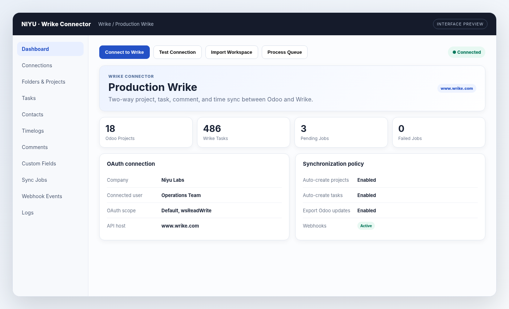
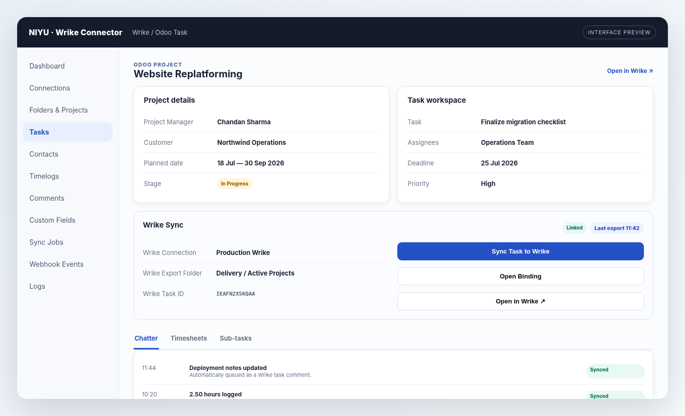
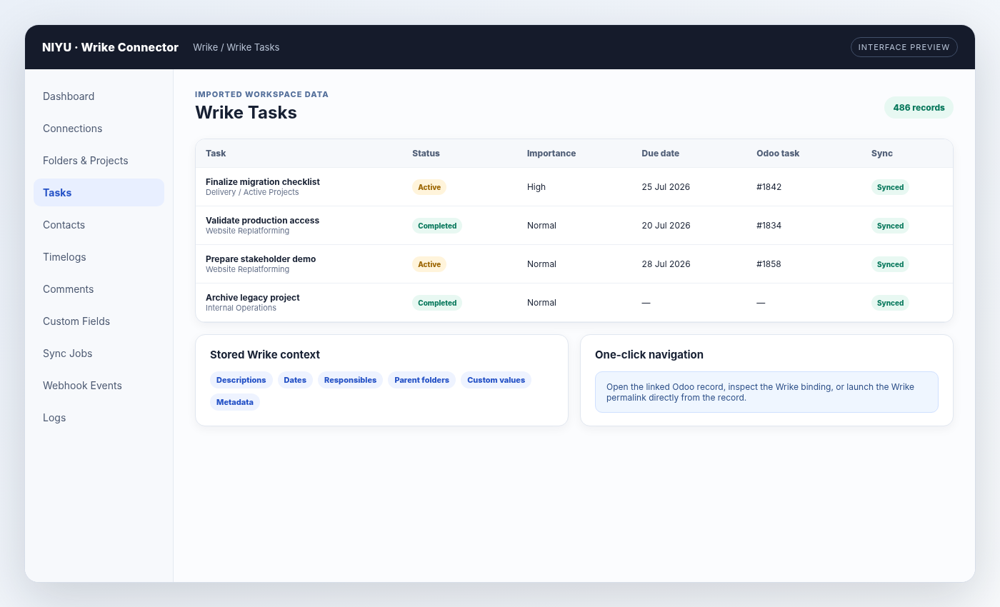
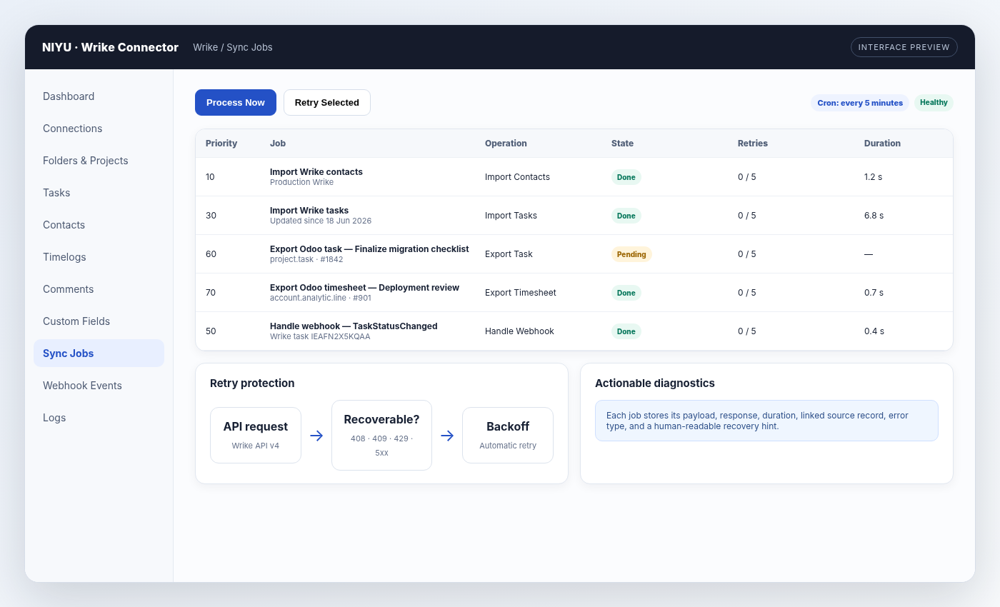
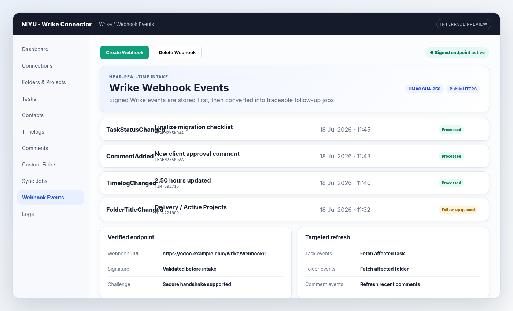

Connect Odoo Project and Timesheets with Wrike through a controlled bidirectional synchronization layer. Import the Wrike workspace into Odoo, export operational changes back to Wrike, react to signed webhook events, and monitor every operation through a retryable queue.
Direction-specific imports and exports connect projects, tasks, comments, and time entries.
Authorization-code flow, token refresh, state validation, and host-aware API access.
Signed Wrike webhook events create traceable follow-up synchronization jobs.
Deduplicated jobs, automatic retries, response history, and actionable errors.
Each connection keeps its own company, Wrike host, OAuth credentials, sync policy, import window, default export folder, connection status, counters, and webhook configuration.

The connector intentionally treats contacts and custom-field definitions as import-only reference data. Operational project work is synchronized in both directions.
| Area | Wrike → Odoo | Odoo → Wrike | What is covered |
|---|---|---|---|
| Projects / folders | Yes | Yes | Import Wrike folder/project records and optionally create linked Odoo projects; create or update Wrike projects from Odoo. |
| Tasks | Yes | Yes | Wrike import maps title, description, due date, parent project, and assignees; Odoo export also sends priority and completed stage. |
| Comments | Yes | Yes | Import Wrike task comments and optionally post them to Odoo chatter; export new Odoo task chatter comments. |
| Timelogs / timesheets | Yes | Yes | Import hours, dates, comments, billing and approval metadata; optionally create Odoo timesheets; create or update Wrike timelogs. |
| Contacts / users | Yes | Import only | Matches Wrike contacts to Odoo users and partners by email; optional partner creation. |
| Custom fields | Yes | Import only | Stores field definitions, settings, applicable entity types, and imported task/folder custom-field values for reference. |
The module extends native Odoo Project, Task, Timesheet, and Chatter behavior. Users can bind records, sync manually, open the internal Wrike binding, or launch the source record in Wrike.

Create a Wrike project beneath the configured default parent, or update an existing binding.
Create or update Wrike tasks with description, due date, priority, assignees, and completion state.
New comments on linked Odoo tasks are converted to plain text and queued for Wrike.
New and edited task timesheets are queued as Wrike timelog create or update operations.
Dedicated Odoo models preserve IDs, permalinks, parent relationships, responsible users, dates, custom values, metadata, raw JSON, synchronization state, and linked Odoo records.

Instead of hiding API work inside user transactions, the connector creates explicit jobs. Duplicate pending work is merged, recoverable API errors wait and retry, and every job retains its operational evidence.

Pending jobs share stable external keys, preventing repeated edits from creating an uncontrolled queue.
Timeouts, conflicts, rate limits, and server errors retry automatically with increasing delays.
Review payloads, responses, durations, linked records, error types, retry counts, and recovery guidance.
The public endpoint validates the Wrike signature before accepting data. Events are stored in Odoo, linked to task/folder/comment/timelog identifiers, and then processed by the normal queue.

A manager completes the OAuth connection once; users then work with normal Odoo project records and the Wrike menu.
Install Wrike Connector for Odoo. The module adds the Wrike application, access groups, queue cron, records, and native Odoo integrations.
Open Wrike → Connections, create a connection, choose its Odoo company, and enter the Wrike OAuth Client ID and Client Secret.
Copy the generated OAuth Redirect URL from Odoo and add it to the callback URLs of the corresponding Wrike OAuth application.
Click Connect to Wrike, approve access, then use Test Connection to verify the account identity and API host.
Set the import date, auto-create policies, comment behavior, timesheet policy, automatic Odoo exports, and default Wrike export parent.
Run Import Workspace. For event-driven updates, configure a public HTTPS web.base.url and create the signed webhook.
Read access to connection status, imported workspace records, jobs, logs, and webhook events.
Configuration, credentials, connection actions, imports, webhooks, job processing, retries, and record administration.
Client credentials, access tokens, refresh tokens, and webhook secrets are restricted to the manager group.
| Odoo version | 19.0 |
|---|---|
| Required Odoo apps | Project, Mail, Timesheets |
| Python dependency | requests |
| Wrike API | API v4 through OAuth 2.0 |
| Queue schedule | Automatic processing every 5 minutes |
| Webhook requirement | Public HTTPS Odoo base URL |
| License | OPL-1 |
No. A project must have a Wrike connection. New exports also require a configured default Wrike parent folder/project.
Only when Auto-create Partners is enabled. Otherwise the connector links to an existing partner or user when the email matches.
Yes, when automatic timesheet creation is enabled and the imported Wrike task is linked to an Odoo task. Employee mapping is used when available.
Recoverable failures such as timeouts, rate limits, conflicts, and server errors move to retry waiting. Non-recoverable configuration or authorization failures are blocked for review.
No. Contacts/users and custom-field definitions are imported for matching and reference. Their creation in Wrike is intentionally not automated.
Yes. Managers can import individual areas, import the complete workspace, process the queue, retry jobs, or sync linked projects, tasks, and timesheets from their forms.
Contact the product team with your Odoo version, deployment type, and Wrike account region.